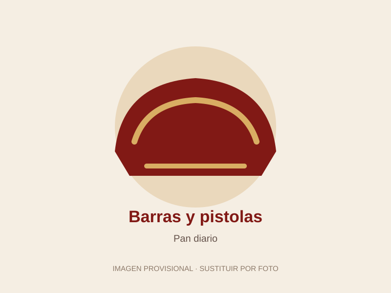
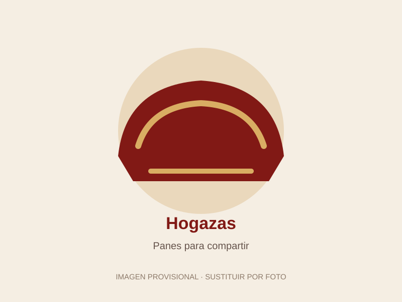
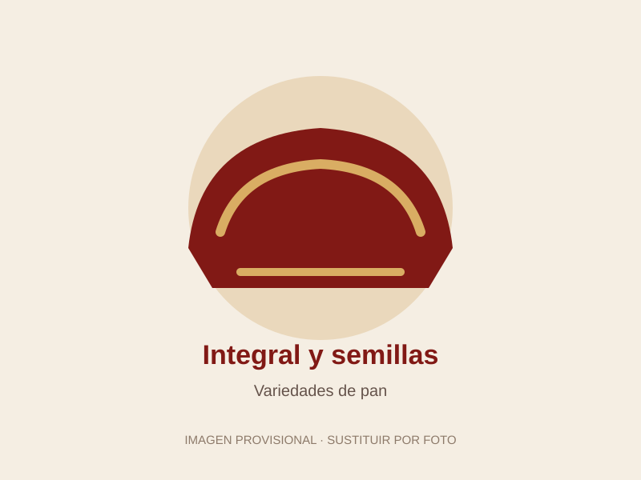
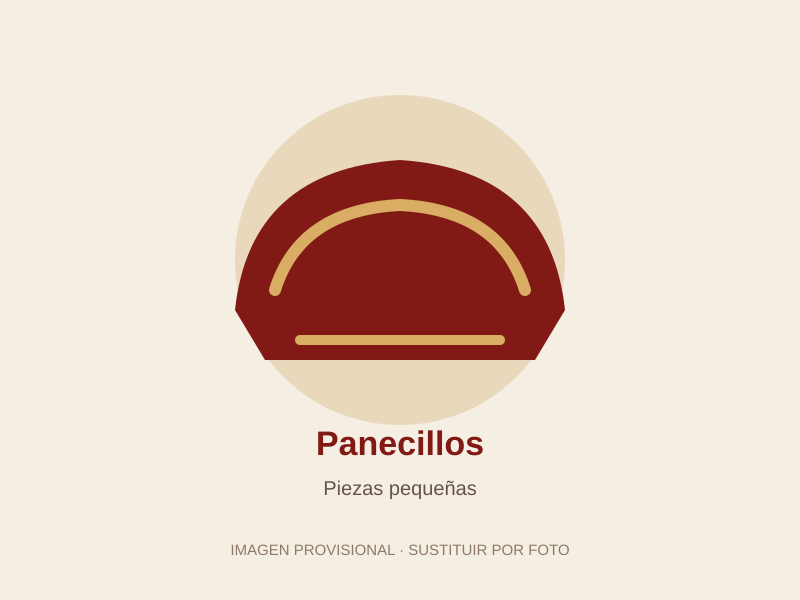
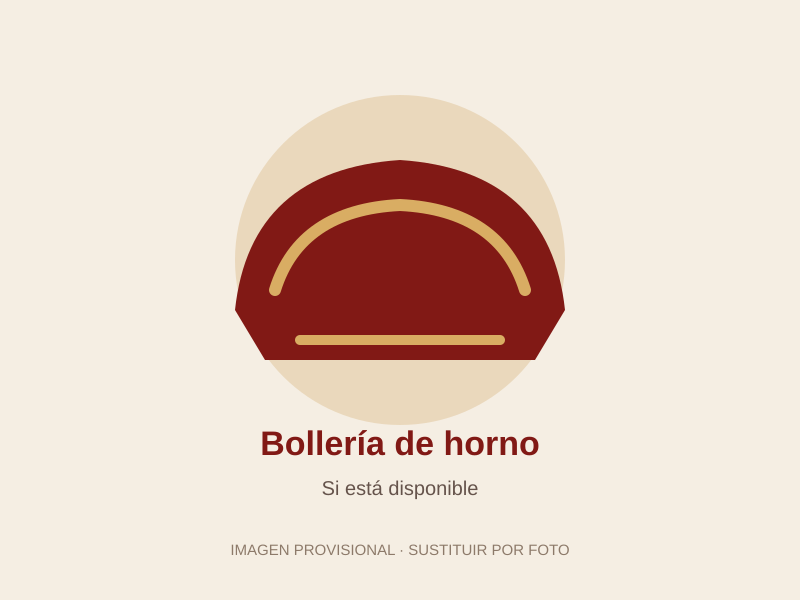
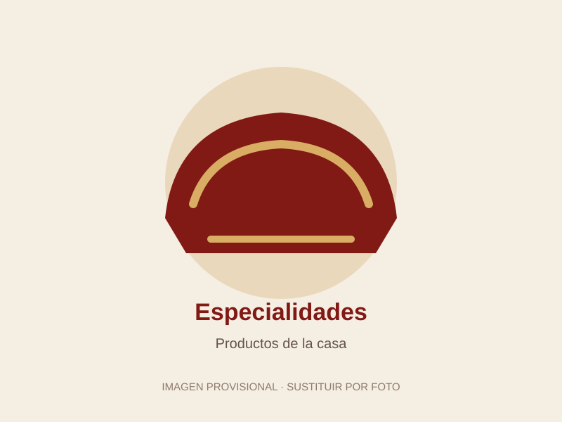

Barras y pistolas
Añade aquí las variedades de barra que tenéis.
Panadería
Descubre nuestra selección de panadería y encuentra tu favorito.
La Hornera de Mario
Desde el desayuno hasta la comida, el pan siempre tiene su lugar. Añade fotografías y descripciones de las variedades reales que ofrece el establecimiento.
Sustituye este texto por información real del negocio antes de publicar.
Ven a conocernos ↗Nuestra panadería
Espacios preparados para añadir fotografías reales de las variedades de pan y horno que ofrecemos.

Añade aquí las variedades de barra que tenéis.

Hogazas y panes para compartir.

Actualiza con las variedades disponibles.

Piezas pequeñas para cualquier comida.

Cruasanes y otras piezas, si forman parte de vuestra oferta.

Reserva este espacio para los productos más característicos.